人材開発支援助成金コンシェルジュ操作マニュアル
引き継がれた書類の確認から、下書き・確認印・提出、
受理と支給決定の記録まで。画面の写真つきでご案内します。
知りたいことから、開けます
集まった書類を、資格者として確認する画面です
書類一式をまとめて受け取る
依頼元が集めた書類・申請データ・AIの結果が、1つの画面にそろいます。
AI二重チェックを参考に
2つのAIの結果を見て、分かれた書類だけを重点的に確かめられます。
下書きと確認印
社労士の画面で下書きを作り、確認したら登録番号つきの確認印を押します。
期限と結果の管理
期限カレンダー、受理番号・支給決定額・労働局の問い合わせを記録できます。
ID・パスワードを預かりません
GビズIDや電子申請のログイン情報は、入力も保存もしません。電子申請は事務所の環境から行います。
作成・提出は社労士の業務として
提携社労士の案件では、依頼元は申請書類の下書きを作りません（社会保険労務士法27条）。
引き継がれた案件だけを表示
ほかの事務所の案件は見えません。お客様との契約・報酬は、事務所とお客様が直接決めます。
- 依頼元
- お客様から書類を集め、期限を管理する会社（研修会社など）。画面の例では「スマートコンテンツ」です。
- 引き継ぎ
- 依頼元が、そろった書類一式・申請データ・AIの結果を社労士に送ることです。
- 確認印
- 社労士が書類を確認したことを、氏名と登録番号つきで残す記録です。
書類集めは依頼元、作成・確認・提出は社労士
計画届の進み方
支給申請の進み方
右上のボタンから、IDとパスワードで入ります
画面右上のアカウントボタンを押すと、ログイン画面が開きます。
- 1ログインID事務所ごとのIDを入れます（例：
sr-minato）。 - 2パスワードご本人だけが設定するパスワードです。運営側も見られません。
- 3ログイン「社労士（資格者）の確認マイページ」が開きます。引き継がれた案件だけが表示されます。
- 4試作版の案内このデモでは、パスワードはすべて
demoです。
 1234
1234| デモ用ID | 事務所（例） | 担当の社労士（例） |
|---|---|---|
sr-minato | みなと社会保険労務士事務所 | 港 一郎 |
sr-aoba | あおば社会保険労務士法人 | 青葉 恵子 |
ホームで、今日やることが分かります
- 14つのタイル新しく届いた／作成中／提出済み・結果待ち／期限まで14日以内の件数。押すと絞り込めます。
- 2対応が必要な案件やることが期限の近い順に並びます。「開く」で案件画面へ。
- 3近い期限引き継ぎ前の案件も含めて、期限とあと何日かを表示します。
- 4依頼元からのメッセージ書類一式を送った連絡などが届きます。
- 5IDとパスワードは預かりません電子申請は事務所の環境から行います。
- 6メニューホーム・確認待ち・案件・期限カレンダー・事務所の設定。
 123456
123456確認が要るものは「確認待ち」に集まります
- 1確認待ち資格者として確認が要る案件です。書類の確認数と、AIの判定が分かれた点数が出ます。
- 2確認印の記録押した確認印の一覧です（会社・手続き・日付・立場）。
- 3絞り込みすべて／新しく届いた／作成中／結果待ち／期限14日以内／完了。
- 4状況引き継ぎ前・新しく届いた・労働局から問い合わせ・入金済み など。
- 5書類のAIチェック未提出・要確認・差し替え・OKの数です。行を押すと案件画面が開きます。
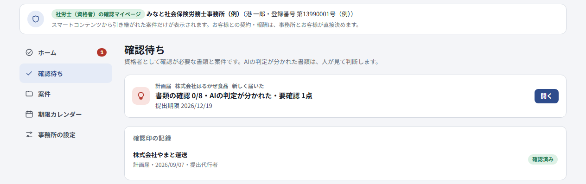
12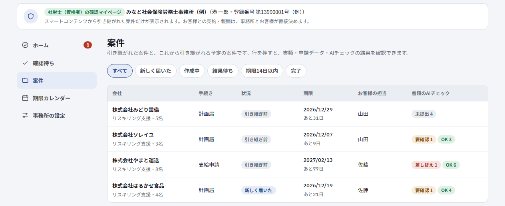
345届いた書類は、受け取るか差し戻す
- 1進み方計画届は 届いた→作成→提出→受理。いまの位置に色が付きます。
- 2受け取って作成を始める内容に問題がなければ押します。状況が「作成中」になります。
- 3差し戻す（不足・不備）理由を付けて依頼元に戻します。
- 4依頼元に確認する質問や追加の資料をお願いします。
- 5差し戻す理由AIチェックと提出前チェックで見つかった点が、先に入っています。直してから送れます。
- 6差し戻す依頼元が直して引き継ぎ直すと、「新しく届いた」に戻ります。
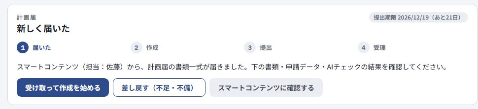
1234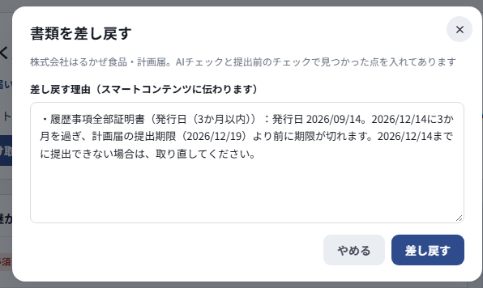
56申請データは、コピーして貼るだけ
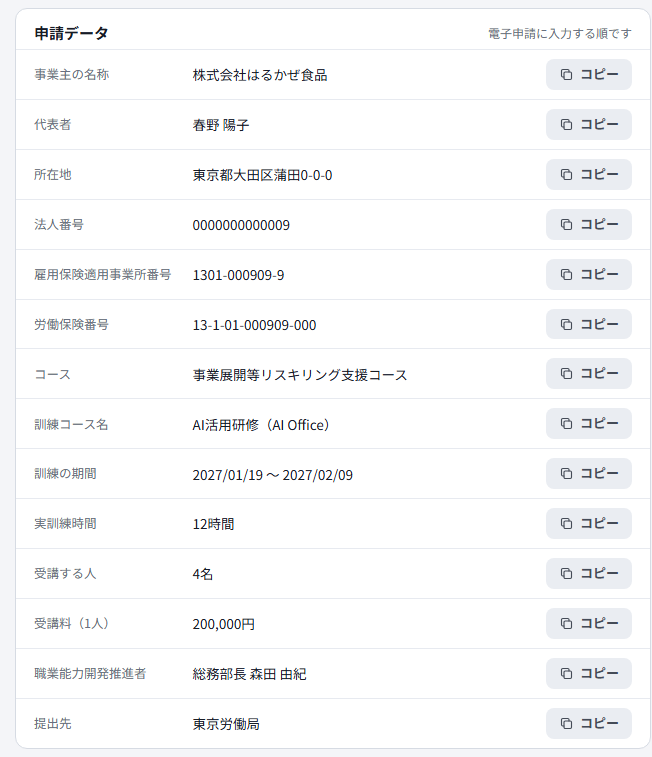
12- 1電子申請に入力する順事業主の名称・番号・コース・訓練の期間などが、入力する順に並びます。
- 2コピー1項目ずつコピーして、雇用関係助成金ポータルに貼り付けられます。
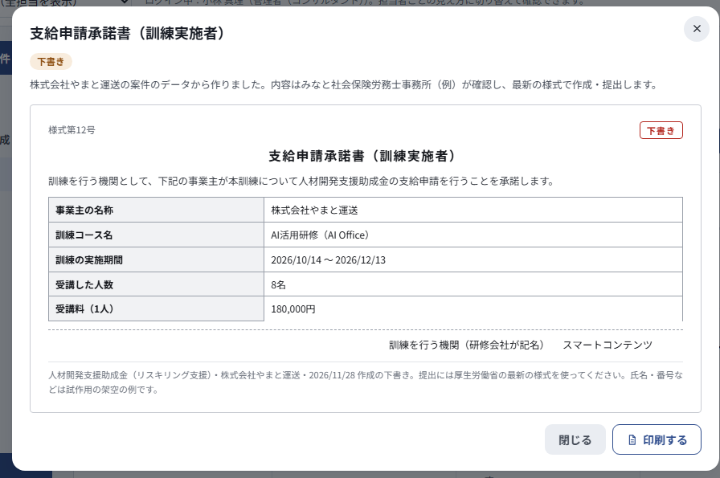
34- 3書類のプレビュー「引き継がれた書類」の「プレビュー」「まとめてプレビュー」で開きます。
- 4印刷下書きは材料です。提出は厚生労働省の最新の様式で行います。
2つのAIが確かめ、分かれたら人が判断
- 1判定が分かれた2つのAIの結果が違う書類です。担当者か社労士が見て判断します。
- 2AIが読み取った内容読み取りが違うときは、ここで直してもう一度チェックします。
- 3AI-1 読み取りとルール発行日・商号・代表者・中小企業の判定などをルールで確認します。
- 4AI-2 別の読み方で突き合わせ申請データやほかの書類と一致するかを確かめます。
- 5人が決める「確認済みにする」か「お客様に差し替えを依頼」。結果は全員の画面に同じく出ます。
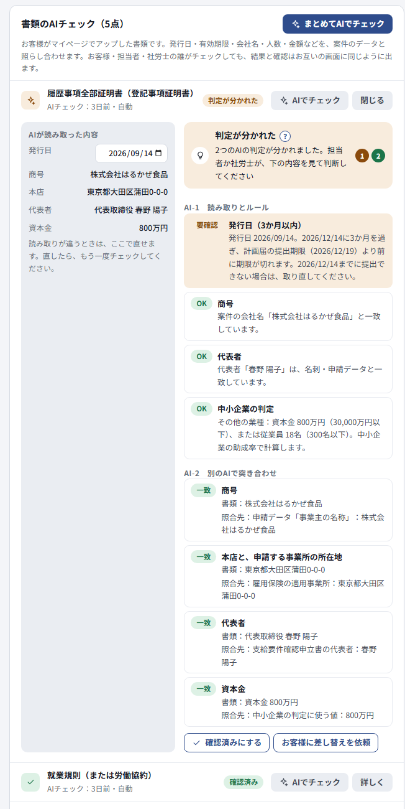
123下書きを作り、確かめて、確認印を押します
- 1下書きを作る集めた書類と申請データから、社労士が申請書類の下書きを作ります。
- 2AIの要確認のお知らせ判定が分かれた書類があると出ます。確認済みにするか、差し戻します。
- 3書類ごとの確認内容と添付を確かめてチェックします（必須・該当する場合の印つき）。
- 4様式の社労士欄「提出代行者」か「事務代理者」のどちらとして記載するかを選びます。
- 5確認印を押す氏名と登録番号つきの確認印です。依頼元とお客様の画面にも「社労士の確認済み」と出ます。
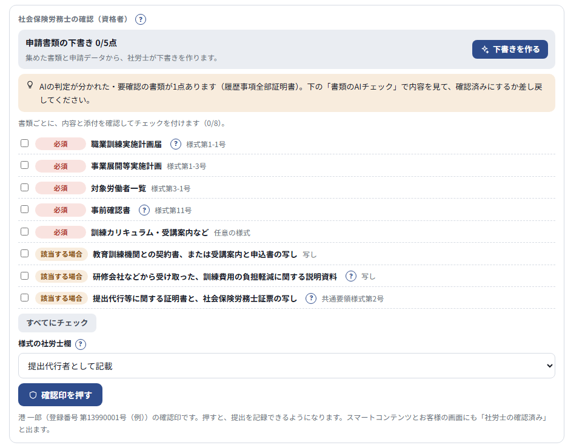
123455つの確認をしてから、提出を記録します
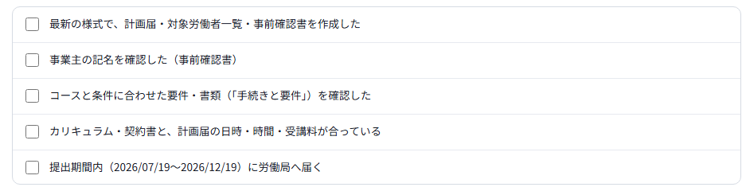
- 提出のしかた
- 電子申請（雇用関係助成金ポータル）／労働局の窓口／郵送（届いた日が提出日）から選びます。
- 提出期間
- 計画届の確認項目には、提出できる期間（例：7/19〜12/19）が日付で出ます。
| 支給申請の提出前の確認（5項目） |
|---|
| 最新の様式で、支給申請書と内訳を作成した |
| 出勤簿と受講記録に食い違いがない |
| 受講料の全額の支払いを確認した |
| 役員等一覧（支給要件確認申立書の別紙）を付けた |
| 申請期限までに労働局へ届く |
受理・支給決定・問い合わせを記録します
- 1受理されたら受理番号を入れて「受理されたことを記録」。4つのステップすべてに印が付きます。
- 2受理番号と日付記録が残ります。訓練が終わると、支給申請の書類が届きます。
- 3労働局からの問い合わせ「労働局から問い合わせがあった」で内容を記録すると、状況が切り替わります。
- 4回答したことを記録回答の内容を残します。資料が要るときは「依頼元に資料を頼む」。
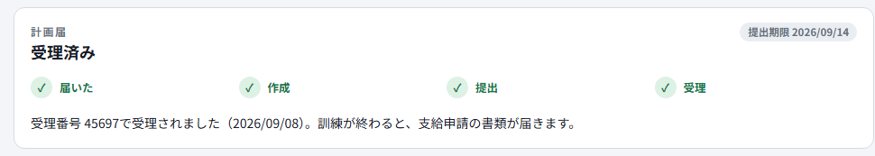
12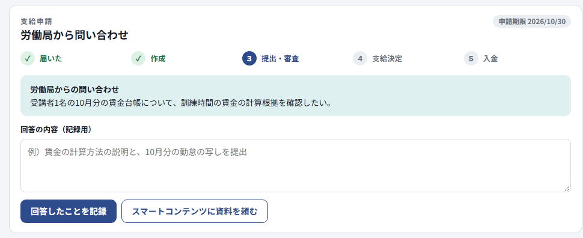
34期限は、カレンダーで先回りします
- 1カレンダーに追加（.ics）事務所のカレンダーに読み込むファイルを書き出します（試作では作られません）。
- 2月の切り替え「前の月」「次の月」で移動します。下に、その月の予定の一覧が出ます。
- 3期限の印会社名で表示します。引き継ぎ前の案件の期限も出ます。
- 4色の意味赤＝提出・申請の期限、緑＝計画届の提出開始、青＝訓練の開始・終了。
| 計画届 | 訓練開始日の6か月前から1か月前まで |
|---|---|
| 支給申請 | 訓練終了日の翌日から2か月以内 |
| 土日祝・年末年始 | 期限の日が閉庁日なら、次の開庁日まで |
 1234
1234事務所の情報と、通知の受け取り方を決めます
- 1事務所の情報事務所名・担当の社労士・社労士会・対応エリア・連絡方法。変えると依頼元の「提携社労士」の画面にも反映されます。
- 2登録番号確認印と、様式の社労士欄に使われます。
- 3通知新しい書類・期限の14日前と3日前・メッセージ・毎週月曜のまとめ。メールで届きます。
- 4提携の内容共有されるもの（書類一式・申請データ・AIの結果・期限）とログインIDです。
- 5GビズIDは入力しません委任契約・報酬は、事務所とお客様が直接結びます。
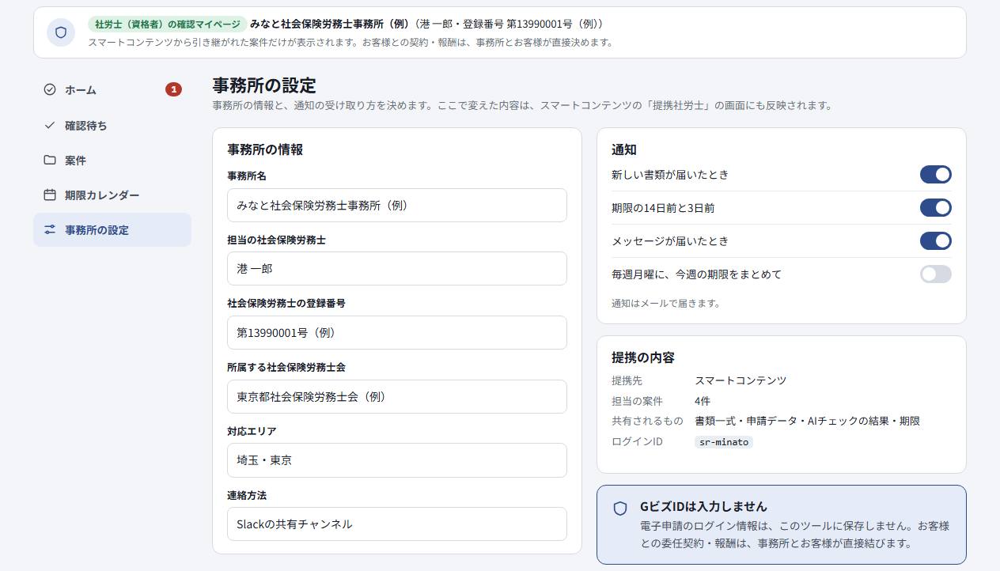
12345よくある質問
報酬を得て申請書類を作成・提出するのは社労士の業務（社労士法27条）だからです。下書きは社労士の画面で作ります。
書類ごとの確認と、AIの判定が分かれた書類の確認が済んでいるかを見てください。
先に確認印が必要です。確認印を押すと「提出したことを記録する」が使えます。
「差し戻す」で理由を付けて戻すか、「依頼元に確認する」で資料をお願いしてください。
AIは確認の手助けです。最終の確認は社労士が行い、支給の判断は労働局が行います。
下書きの項目は要点をまとめたものです。提出は厚生労働省の最新の様式で行ってください。
ありません。GビズIDなどのログイン情報は預からないため、電子申請は事務所の環境から行います。
このアプリは関わりません。委任契約と報酬は、事務所とお客様が直接決めます。